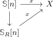

R-local homotopy group and extension to the R-local sphere
Proposition
Let $R = \mathbb{Z}[p^{-1} \vert p \in P] \subseteq \mathbb{Q}$ be a subring Let $X$ be a spectrum, $x \in \pi_n(X)$ an element such that $p$ acts invertibly on $x$. Then there exists a commutative diagram

Proof
recall that $\mathbb{S}_R[n] = \mathrm{colim} X \xrightarrow{\cdot p} X ...$ and we may identify
\begin{align*}
\mathrm{map}(\mathbb{S}_R[n], X) \simeq& \mathrm{map}(\mathrm{colim} \mathbb{S}[n], X)\\
\simeq& \mathrm{lim} \mathrm{map}(\mathbb{S}[n], X) \\
\simeq& \mathrm{lim} X[n]
\end{align*}
now the lim-lim1 sequence of homotopy objects in a stable category shows that there exists a surjection
\begin{displaymath}
\begin{tikzcd}
\pi_0(\mathrm{lim} X[n]) \arrow[twoheadrightarrow, ]{r}{} \dar{\cong} & \mathrm{lim} \pi_0(X[n])\\
\pi_0(\mathrm{map}(\mathbb{S}_R[n],X) \arrow[twoheadrightarrow, ]{r}{} &
\end{tikzcd}
\end{displaymath}so in particular any preimage suffices.